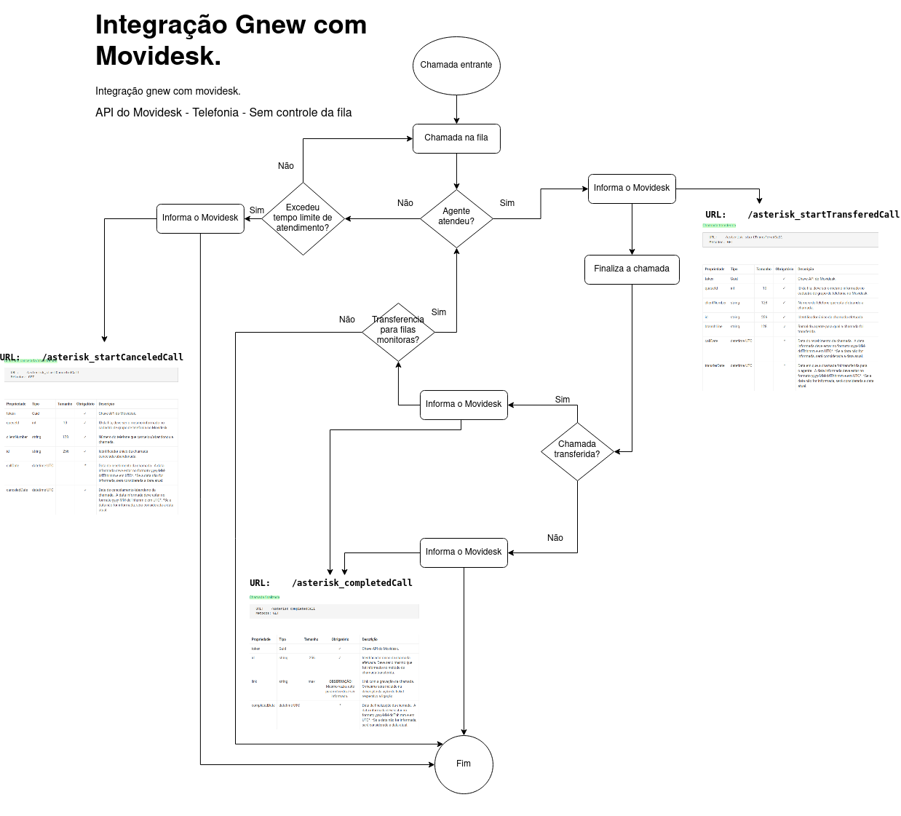

MOVIDESK
O Movidesk é um sistema de atendimento que une recursos de Help Desk e Service Desk. Ele pode ser. utilizado tanto para a comunicação com os clientes, quanto para a comunicação interna. movidesk.com.
API do Movidesk - Telefonia - Sem controle da fila
Recursos utilizados
Chamada transferida- Ligações atendidas.Chamada finalizada- Ligações encerradas.Chamada cancelada/abandonada- Ligações que não tiveram atendimento.
O projeto (proposta)
O Gnew informa os status de chamadas através da API do Movidesk, que recebe os status em 3 endpoinsts:
| Método | Endpoint |
|---|---|
| GET | /asterisk_startTransferedCall |
| GET | /asterisk_completedCall |
| GET | /asterisk_startCanceledCall |
Layout do projeto
